Kako primiti popise djece od klubova i unijeti ih na natjecanje, korak po korak.
Primjer kroz cijeli dokument: Županijsko prvenstvo u karateu.
Nazivi gumba i polja pišu se ovakvim podebljanim slovima i točno su onakvi kakvi stoje u aplikaciji. Crveni brojevi na slikama pokazuju što treba kliknuti ili provjeriti, redom kojim se spominju u tekstu. Zeleni okviri su savjeti, narančasti upozorenja, a crveni opasnosti (stvari koje se ne mogu poništiti).
| Pojam | Što znači |
|---|---|
| Natjecanje | Jedan turnir, npr. Županijsko prvenstvo 2026. Sve ostalo (kategorije, prijave, ždrijeb) pripada jednom natjecanju. |
| Klub | Karate klub koji šalje djecu. |
| Natjecatelj | Dijete. Aplikacija pamti ime, prezime, spol i datum rođenja, pa se isto dijete ne mora ponovno upisivati svake godine. |
| Kata | Disciplina u kojoj se izvodi niz pokreta (ocjenjuje se nastup). Težina se ne računa. |
| Kumite | Disciplina borbi. Natjecatelji se dijele po težinskim razredima, pa je težina obavezna. |
| Kategorija | Skupina u kojoj se djeca natječu: dobna skupina + spol + disciplina (+ težinski razred u Kumiteu). Primjer: U14 - Mlađi kadeti - Kumite -40 kg. |
| Prijava | Jedno dijete u jednoj kategoriji. Dijete koje nastupa u Kati i Kumiteu ima dvije prijave. |
| AKA / AO | Dva borca u meču: AKA (crveni) i AO (plavi). |
| Tatami | Borilište (strunjača). Na natjecanju može biti više tatamija odjednom. |
| Ždrijeb | Raspored borbi u kategoriji. Radi se kad su prijave gotove i izvagane. |
| Vaganje | Mjerenje težine na dan natjecanja. Dijete čija težina ne odgovara razredu prelazi u pravi razred. |
Aplikacija sve prije spremanja pokazuje u pregledu i gotovo sve se može ispraviti ili poništiti. Jedina velika zapreka je ždrijeb: kad kategorija dobije ždrijeb, njezine se prijave više ne mijenjaju. Zato prvo dovršite prijave i vaganje, pa tek onda radite ždrijeb.
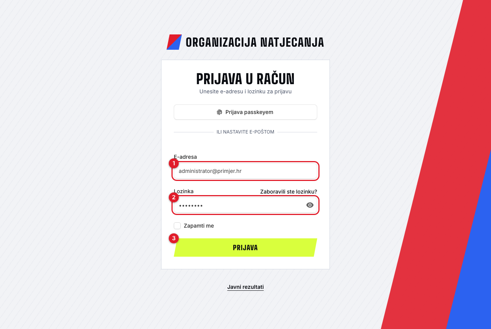
Kliknite Zaboravili ste lozinku? i slijedite upute iz e-pošte. Račune stvara samo administrator, na stranici Korisnici (gumb Novi korisnik).
Nakon prijave vidite Dashboard. S lijeve strane je izbornik, a vama su važne stavke pod naslovom Administracija:
| Stavka izbornika | Za što služi |
|---|---|
| Natjecanja | Popis natjecanja i sve što se radi unutar jednog natjecanja (koraci 1 do 8). |
| Klubovi | Popis svih klubova (dodavanje, uređivanje). |
| Natjecatelji | Popis sve djece (traženje, uređivanje, ručni unos). |
| Duplikati | Dvaput upisana djeca i klubovi, i njihovo spajanje. |
| Korisnici | Računi za rad u aplikaciji (administratori i operateri tatamija). |
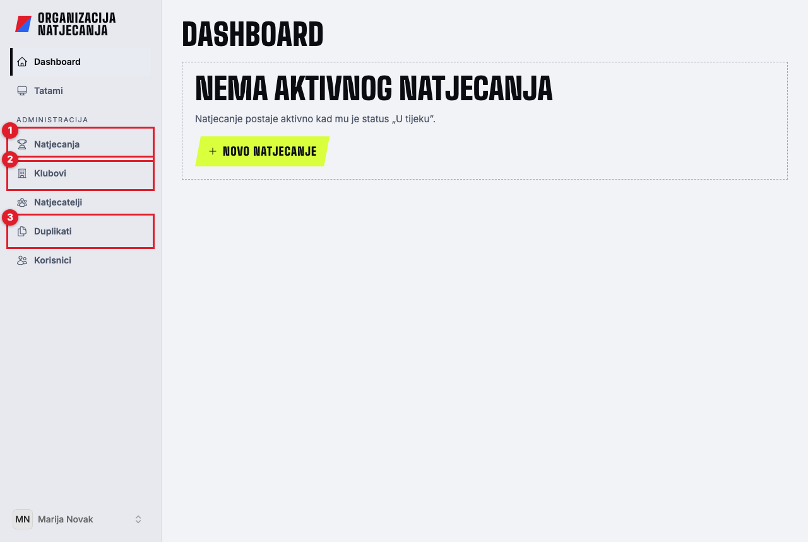
Kad se prvi put prijavite, otvorite Postavke (dolje lijevo, kod vašeg imena), pa karticu Sigurnost i postavite vlastitu lozinku.
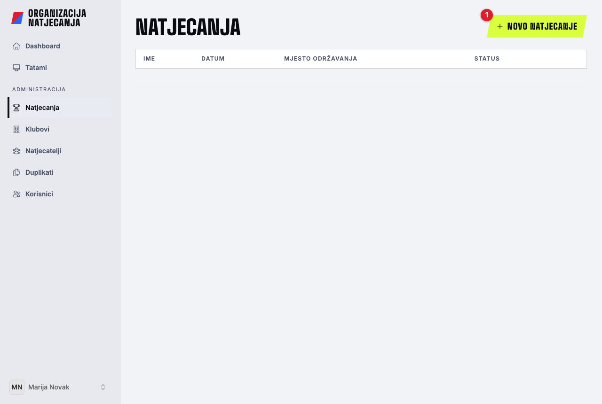
| Polje | Što upisati |
|---|---|
| Ime | Naziv natjecanja, npr. Županijsko prvenstvo 2026. Obavezno. |
| Datum | Dan natjecanja. Obavezno. Dobne skupine kategorija računaju se prema godini ovog datuma. |
| Vrijeme početka | Kad počinje prvi meč. Obavezno. Po njemu se računa time table. |
| Mjesto održavanja | Dvorana ili grad. Obavezno. |
| Organizator | Savez ili klub organizator. Nije obavezno. |
| Rok za prijave | Do kad klubovi šalju popise. Nije obavezno. Aplikacija samo upozori kad se uvozi nakon roka, ne blokira uvoz. |
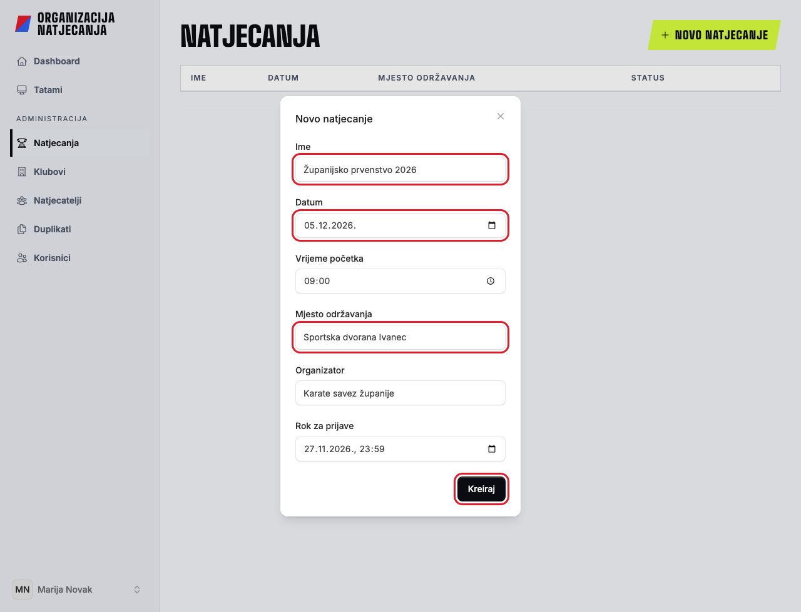
Novo natjecanje počinje kao Nacrt i nitko izvan aplikacije ga ne vidi. Dok primate popise od klubova, postavite status Prijave.
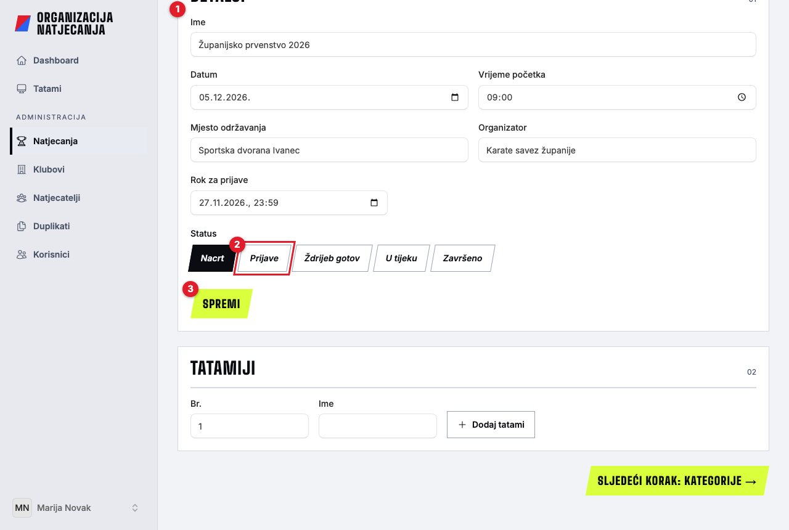
| Status | Kad ga koristiti |
|---|---|
| Nacrt | Dok pripremate. Natjecanje je skriveno za javnost. |
| Prijave | Dok klubovi šalju popise. Uvoz radi bez upozorenja. |
| Ždrijeb gotov | Kad je ždrijeb napravljen (informativno). |
| U tijeku | Na dan natjecanja. Tek tada natjecanje postaje „aktivno” na Dashboardu i javnim stranicama piše Uživo. |
| Završeno | Kad je sve gotovo. |
Status se nikad ne mijenja sam. Vi ga postavljate, kao gore. Ako uvozite popis, a status nije Prijave, aplikacija prikaže upozorenje „Natjecanje nije u fazi prijava”, ali uvoz svejedno radi.
Na vrhu svake stranice natjecanja je traka s osam koraka. Njome se krećete kroz posao, redom slijeva nadesno. Zeleni je korak u kojem se trenutno nalazite.
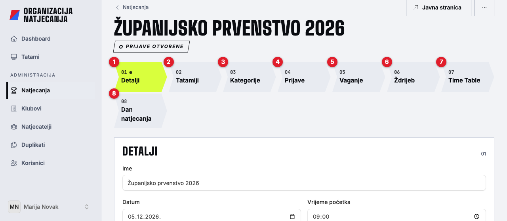
Tatami je borilište. Dodajte onoliko tatamija koliko će ih biti u dvorani.
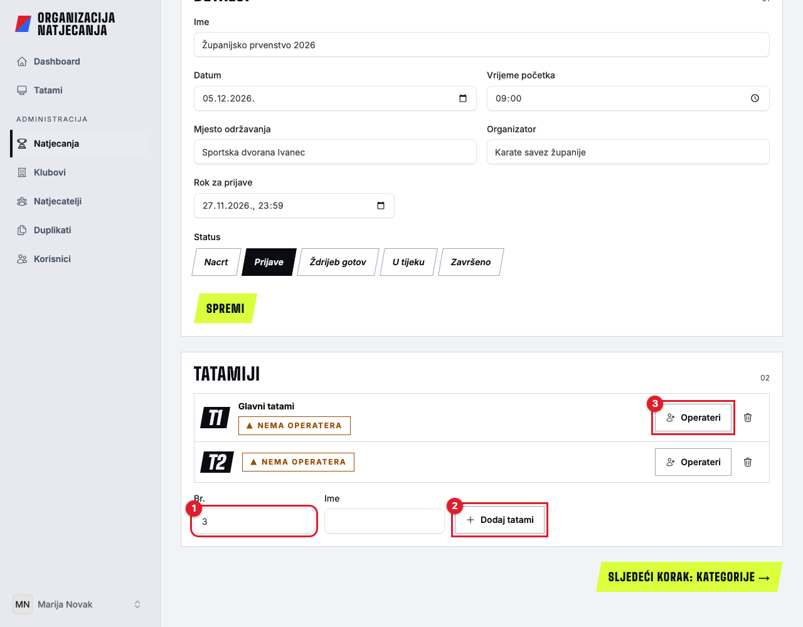
Operater je osoba koja na tatamiju unosi rezultate. Gumb Operateri otvara popis korisnika s ulogom Operater tatamija. Takve račune prvo napravite na stranici Korisnici. Operatere možete dodijeliti i kasnije, prije dana natjecanja.
Tatami se ne može preimenovati. Ako ste pogriješili u imenu ili broju, obrišite ga ikonom koša (Obriši tatami) i dodajte ponovno. Kategorije koje su bile na njemu vraćaju se u „bez tatamija”.
Kategorije određuju tko se s kim bori. Ne morate ih upisivati ručno: aplikacija ima službene popise.
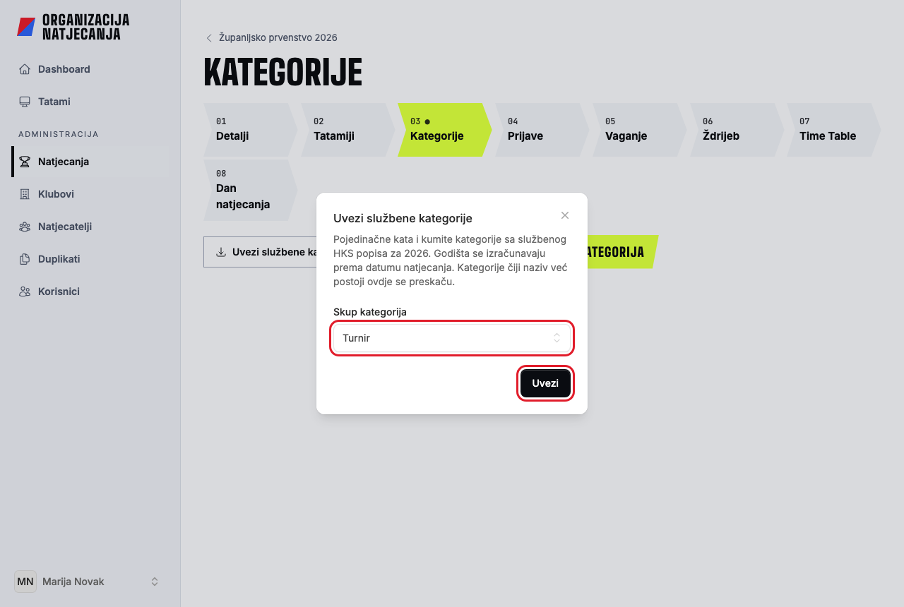
Ne postoji skup pod imenom „Županijsko prvenstvo”. Skup odabire organizator prema pravilima svog natjecanja: Turnir (dobne skupine U8 do Veterani, kao na većini turnira), Prvenstvo Hrvatske (po jedna dobna skupina za svako godište) ili Kup Hrvatske (djeca po godištu rođenja). U ovim uputama kao primjer koristimo Turnir. Ako niste sigurni, pitajte tehničkog voditelja natjecanja.
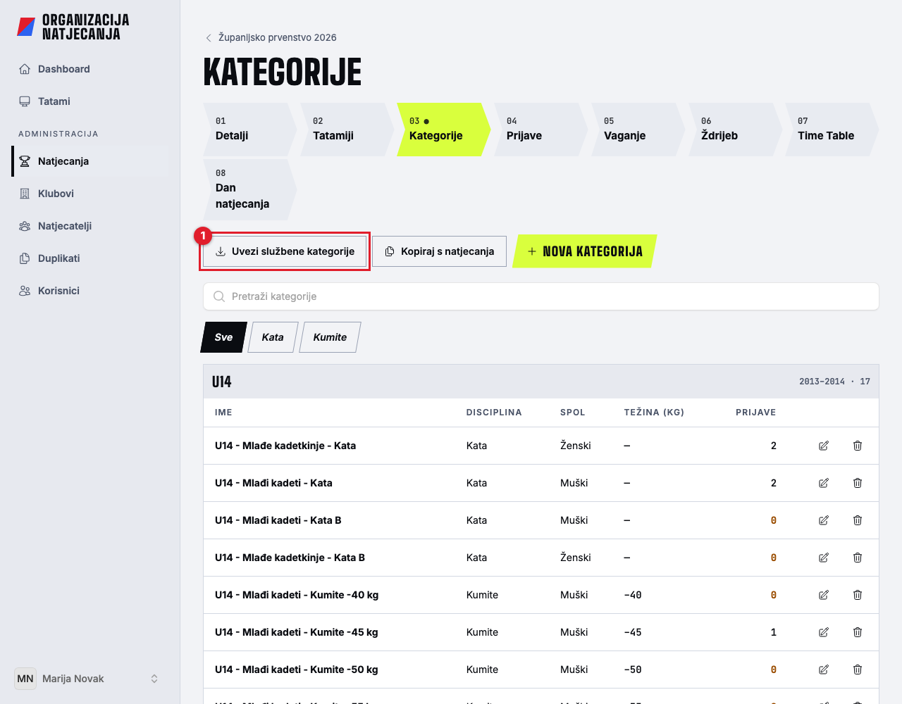
Neki skupovi imaju i kategorije Kata B (za početnike). Aplikacija ih nikad ne bira sama. Dijete u Kati B upisujete ručno (poglavlje 7).
Ako vam treba kategorija koje nema, kliknite Nova kategorija. Ako je slično natjecanje već bilo, Kopiraj s natjecanja prenosi sve njegove kategorije (bez prijava).
Klubovi vam popise šalju u Excelu. Da ne bi svaki klub izmislio svoj oblik tablice, aplikacija sama priprema predložak: datoteku s točno određenim stupcima. Predložak za klub koji je već nastupao dolazi već popunjen imenima djece koja su prije bila prijavljena.
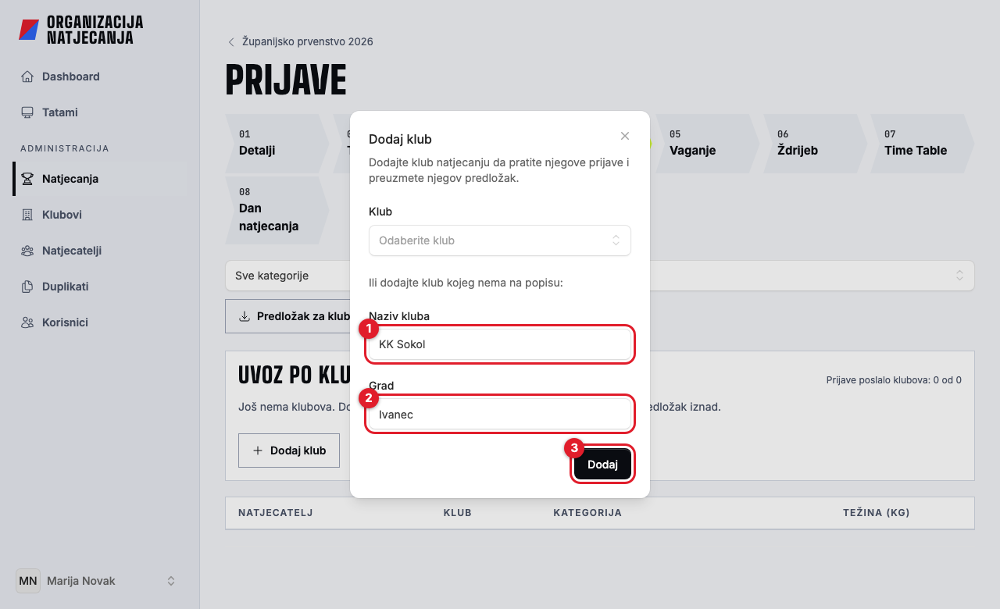
Klub „KK Tigar” i „Karate klub Tigar” za aplikaciju su dva različita kluba. Prije dodavanja pogledajte popis i koristite klub koji već postoji.
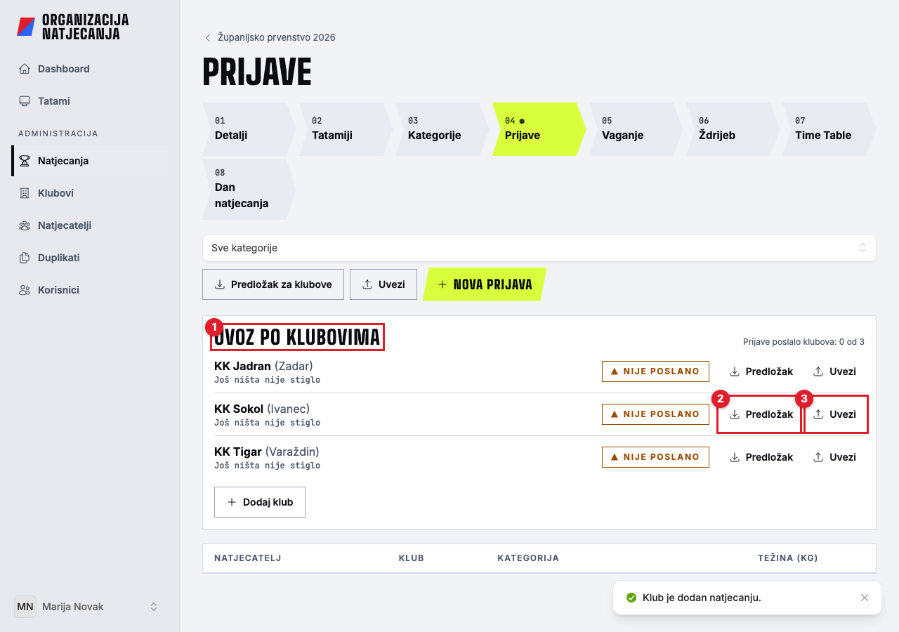
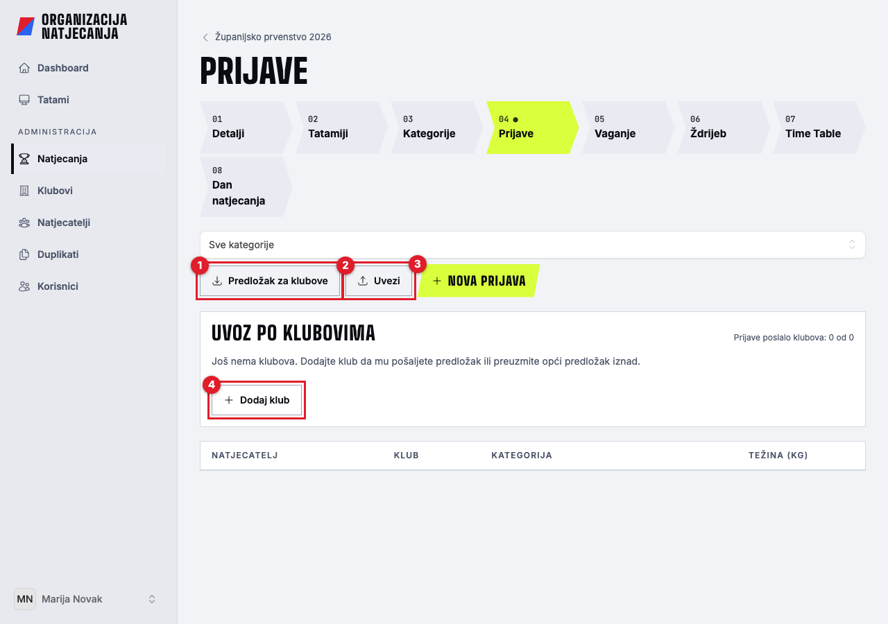
Ovo prepišite u e-poštu klubu. Klub ispunjava samo list „Prijave”, jedan red za jedno dijete.
| Ime | Prezime | Spol | Datum rođenja | Težina | Kata | Kumite |
|---|---|---|---|---|---|---|
| Marko | Horvat | M | 14.03.2014. | 33 | DA | DA |
| Ana | Babić | Ž | 21.06.2010. | DA | ||
| Ivan | Kovač | M | 02.09.2007. | 70 | DA |
| Stupac | Pravilo |
|---|---|
| Ime, Prezime | Kako piše u dokumentima, s hrvatskim slovima. |
| Spol | M ili Ž. |
| Datum rođenja | Npr. 14.03.2015. Mora biti stvarni datum u prošlosti. Po godini rođenja bira se dobna skupina. |
| Težina | U kilogramima, npr. 33,5. Obavezna samo ako je Kumite = DA. Za samu Katu ostaviti prazno. |
| Kata, Kumite | Upišite DA za disciplinu u kojoj dijete nastupa, inače ostavite prazno. Dijete smije nastupiti u obje. |
Kategoriju određuje aplikacija, prema spolu, godini rođenja i težini. Klub ne smije brisati list Prijave ni mijenjati nazive stupaca. U predlošku koji je već popunjen, djecu koja ne nastupaju samo ostavite bez DA: bit će preskočena. Novo dijete dodajte u novi red.
Kad klub vrati ispunjenu datoteku, spremite je na računalo. Uvoz ima tri koraka, a prije nego se išta spremi, vidite što će aplikacija napraviti.
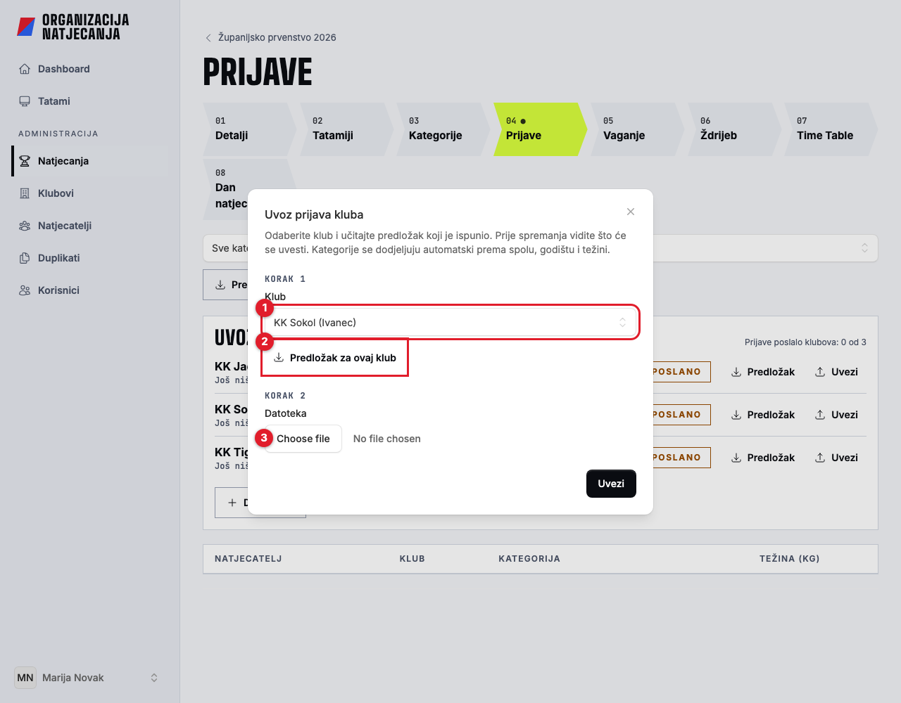
Pregled počinje jednom rečenicom, npr. „Redaka: 8. Spremno: 7, preskočeno: 0, s problemom: 1. Novih prijava: 9…”. Ispod je popis redaka, a svaki redak ima oznaku:
| Oznaka | Što znači |
|---|---|
| Spremno | Redak je ispravan. Piše u koju će se kategoriju (ili kategorije) dijete upisati. |
| Preskočeno | Ništa se ne događa: dijete je već prijavljeno ili u predlošku nije označena nijedna disciplina. |
| Problem | Redak ima grešku. Crveni tekst ispod imena kaže što je krivo. Takvi redci su na vrhu popisa. |
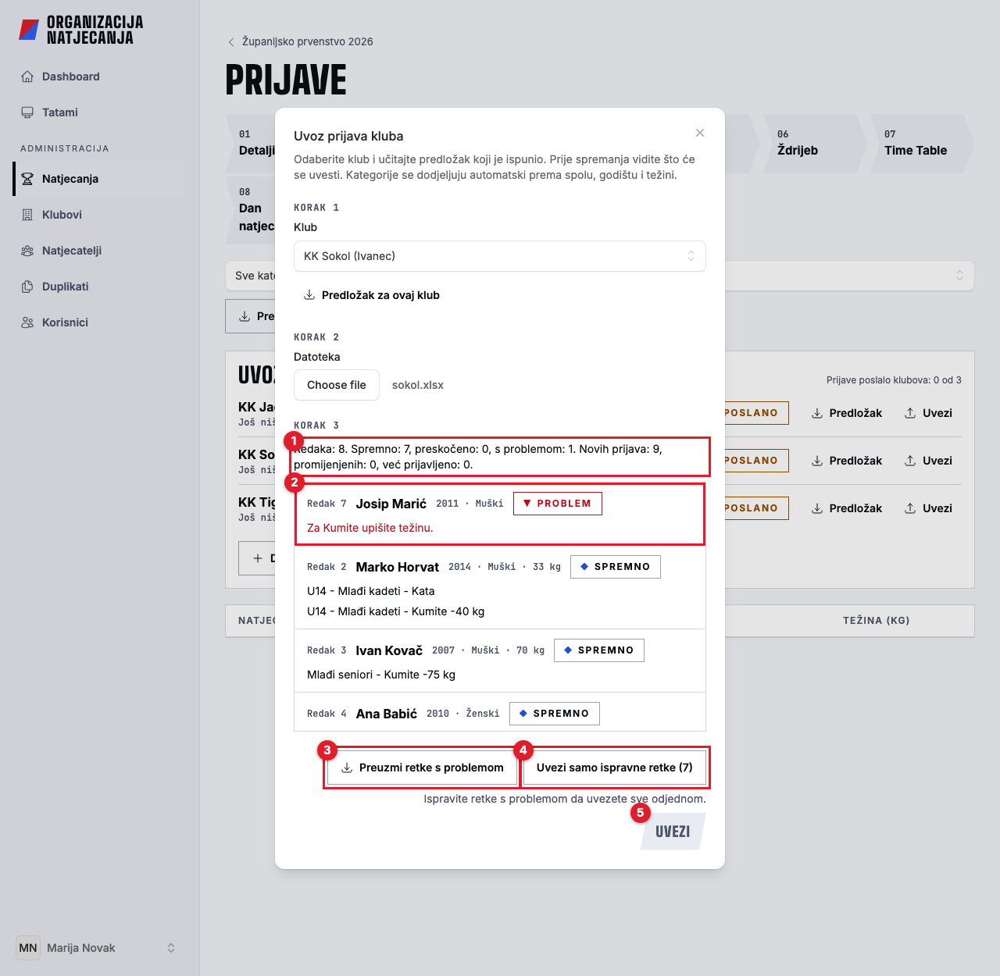
Dok barem jedan redak ima Problem, gumb Uvezi je siv: aplikacija ne dopušta da se uveze samo „pola” datoteke slučajno. Imate dva puta:
Kad klub vrati ispravljene retke, uvezite ih na isti način. Dovoljno je poslati samo ispravljene retke: ostalo je već upisano.
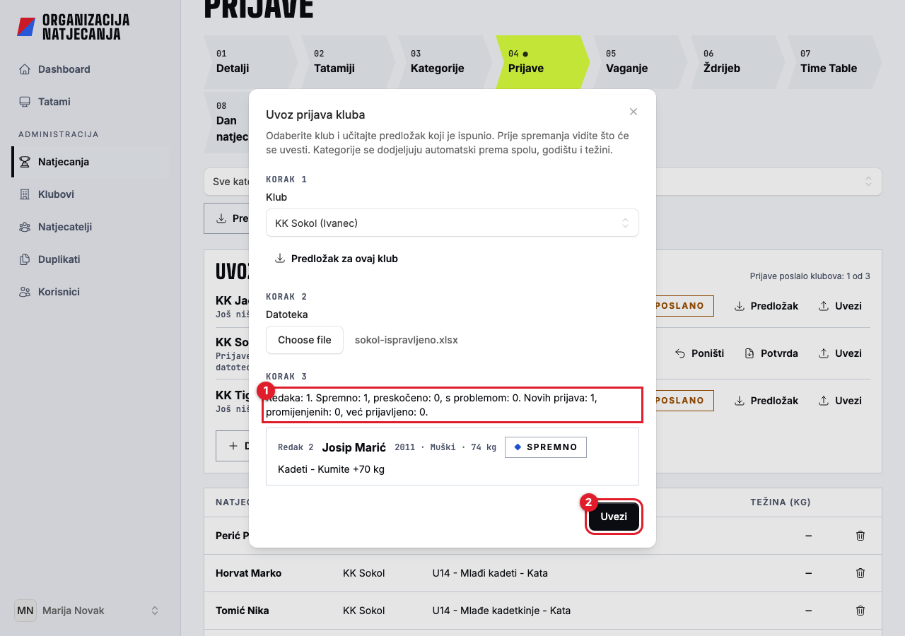
| Poruka u pregledu | Što je krivo i što učiniti |
|---|---|
| Za Kumite upišite težinu. | Kumite je označen, a težina je prazna. Klub mora upisati težinu. |
| Neispravan datum rođenja „…”. | Datum nije stvarni datum ili je u budućnosti. Treba oblik 14.03.2015. |
| Nepoznat spol „…”. | U stupcu Spol mora biti M ili Ž. |
| Nije označena ni Kata ni Kumite. | Redak nema nijedno DA. U običnom predlošku svaki red mora imati bar jedno DA. |
| Neispravna vrijednost „…” u stupcu Kata/Kumite. | U tim stupcima smije biti samo DA ili prazno. |
| Nijedna kategorija ne odgovara: … | Za to godište, spol i težinu nema kategorije u odabranom skupu. Provjerite podatke i skup kategorija (poglavlje 4). Dijete možete upisati ručno (poglavlje 7). |
| Kategorija „…” već ima ždrijeb. | Za tu je kategoriju ždrijeb već napravljen i prijave se ne mijenjaju. |
Ako u datoteci jednog kluba stoji dijete koje već postoji u drugom klubu (isto ime, isti datum rođenja), uz taj redak piše napomena, npr. „Natjecatelj s istim imenom i datumom rođenja već postoji u klubu KK Sokol. Je li dijete promijenilo klub?”. To nije greška i uvoz se može nastaviti. Poslije takvo dijete možete spojiti na stranici Duplikati (poglavlje 8).
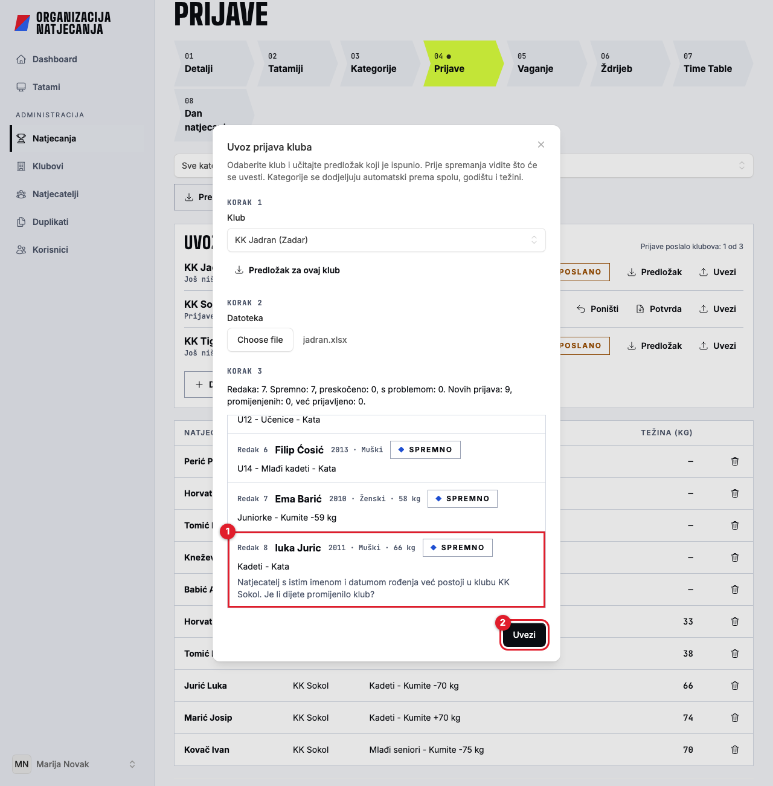
Pored uvoza po klubu postoji i opći Uvoz iz Excela (izbornik Uvezi iznad kartice). Koristi se rijetko: kad imate jednu tablicu za sve klubove sa stupcima Klub, Grad, Ime, Prezime, Spol, Datum rođenja, Kategorija, Težina.
Preporuka: koristite uvoz po klubu s predloškom.
Kartica Uvoz po klubovima je vaš pregled po klubovima. Gore desno piše „Prijave poslalo klubova: X od Y”.
| Status kluba | Što znači |
|---|---|
| Poslano | Klub ima prijave (uz broj prijava i datum zadnjeg uvoza). |
| Problemi | Zadnja datoteka kluba nije prihvaćena. Piše koliko je problema. |
| Nije poslano | Od kluba još ništa nije stiglo. |
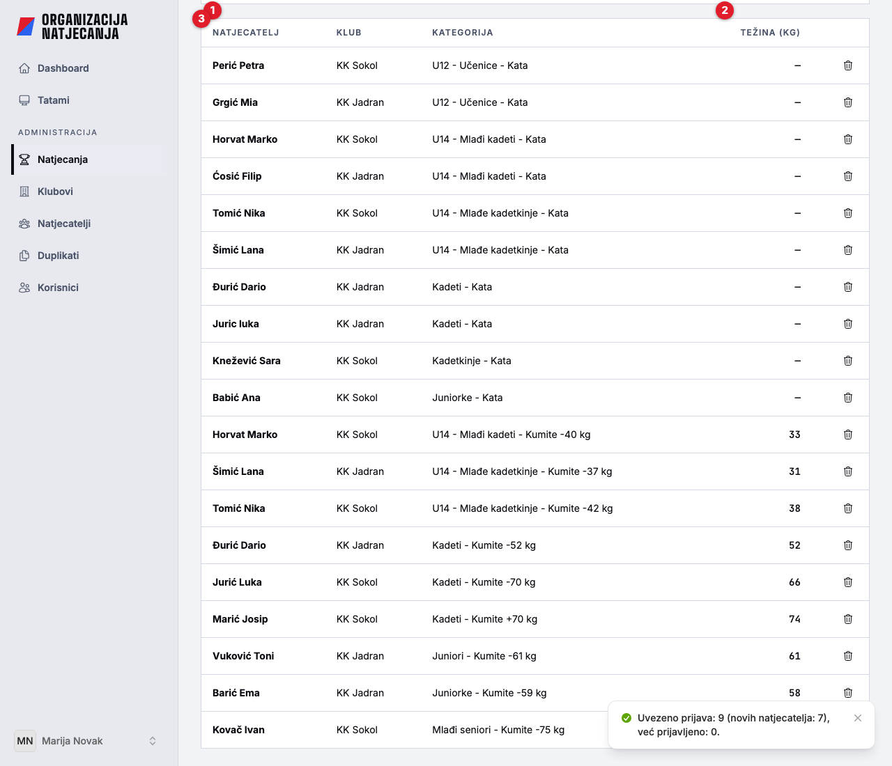
Ispod kartice je popis svih prijava. Filtrirajte ga poljem Sve kategorije da vidite jednu kategoriju. Stupac Težina (kg) je težina koju je klub prijavio (ne izvagana).
Najlakši način da klub provjeri što ste upisali jest da mu pošaljete potvrdu.
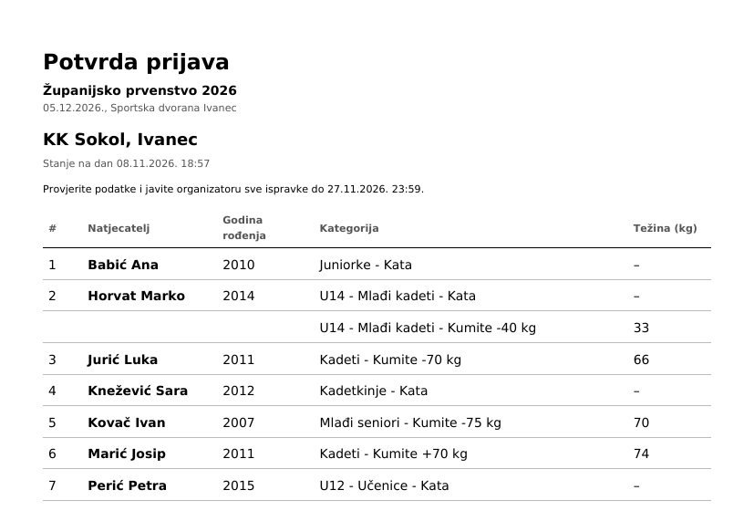
Potvrda je „fotografija stanja” u trenutku otvaranja (piše „Stanje na dan”). Ako poslije uvezete nove prijave, preuzmite potvrdu ponovno. Potvrda ne sadrži puni datum rođenja ni spol, samo godinu.
Ovako se upisuje i dijete u Kata B ili u kategoriju koju aplikacija ne bi sama odabrala. Ručni unos provjerava spol, godište i težinu prema kategoriji.
U popisu prijava kliknite ikonu koša na kraju retka i potvrdite pitanje Obrisati ovu prijavu?. Dijete ostaje u popisu natjecatelja, briše se samo ta prijava.
Ispravite je na stranici Natjecatelji (traženje po imenu, pa ikona olovke). Ispravak se vidi na svim prijavama tog djeteta. Ako je krivi datum rođenja promijenio dobnu skupinu, dijete treba prebaciti u pravu kategoriju: obrišite krivu prijavu i uvezite ispravljenu datoteku.
Ako ste uvezli krivu datoteku ili u krivi klub, uz klub kliknite Poništi. Aplikacija pita „Poništiti zadnji uvoz kluba…? Obrisat će se prijave koje je stvorio…”. Potvrdom se brišu prijave koje je taj uvoz napravio i djeca koja su nastala tim uvozom (a nemaju drugih prijava).
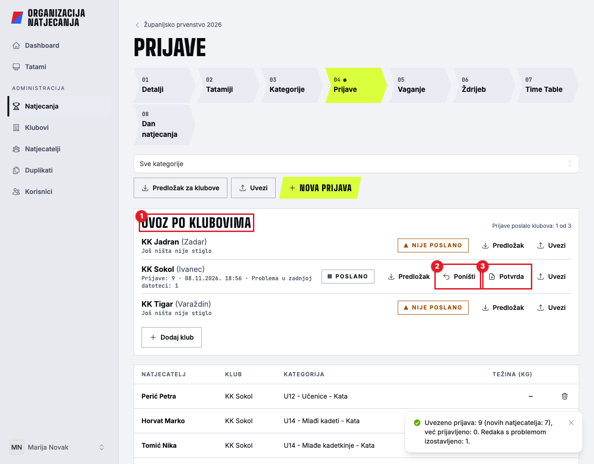
Duplikat je isto dijete (ili isti klub) upisano dvaput, npr. zato što je jednom upisano s „Jurić”, a drugi put s „Juric”, ili zato što je dijete prešlo u drugi klub. Aplikacija sama traži takve parove: isto ime (ne gleda velika slova, kvačice i razmake), isti datum rođenja i isti spol za djecu, odnosno isto ime i grad za klubove.
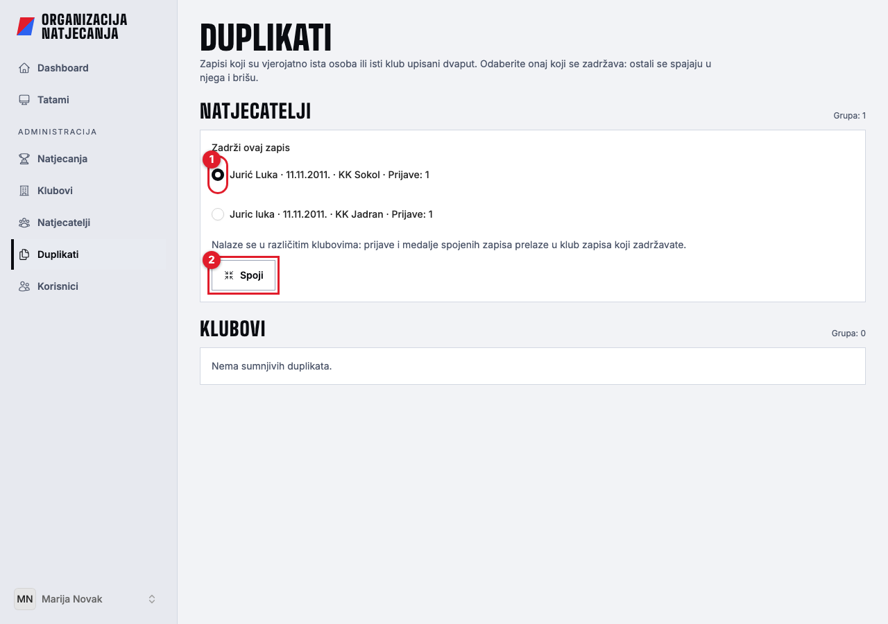
Aplikacija tada ništa ne mijenja i objasni razlog.
Klubove koji se zovu bitno različito (npr. „KK Tigar” i „Karate klub Tigar”) ne smatra istima. Ako ih želite spojiti, prvo ispravite naziv jednog od njih na stranici Klubovi tako da bude jednak, pa ih spojite ovdje.
Vaganje radite na dan natjecanja, prije ždrijeba. Važu se samo prijave u Kumiteu. Ako izmjerena težina ne odgovara razredu u koji je dijete prijavljeno, aplikacija ga sama prebaci u pravi razred (iste dobne skupine i spola). Tko se nije pojavio, označava se kao odsutan i ne ulazi u ždrijeb.
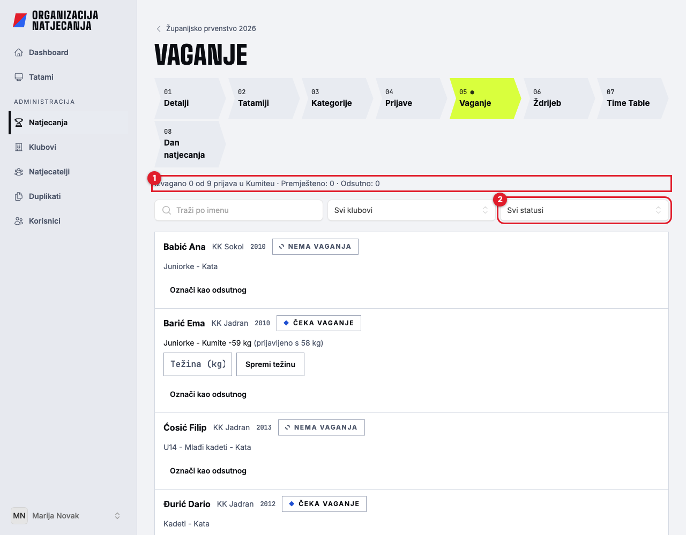
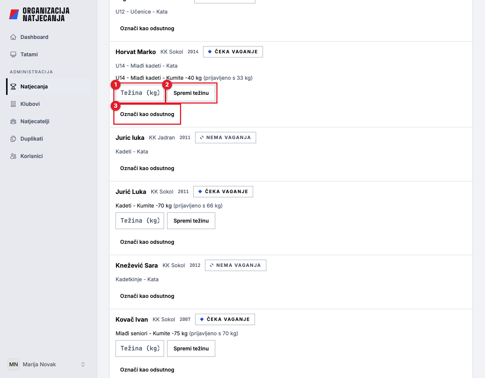
Aplikacija odmah javlja ishod:
| Poruka / oznaka | Što znači |
|---|---|
| Izvagan | Težina odgovara razredu u koji je dijete prijavljeno. Ništa se ne mijenja. |
| Premješten | Težina ne odgovara, pa je dijete prebačeno u pravi razred. Piše „Premješten iz …”. |
| Problem | Težina ne odgovara ni jednom razredu ili je dijete u pravom razredu već prijavljeno. Prijava ostaje gdje jest, a poruka objašnjava razlog. Riješite ručno (poglavlje 7). |
| Čeka vaganje | Još nije izvagan. |
| Nema vaganja | Dijete je prijavljeno samo u Kati, pa se ne važe. |
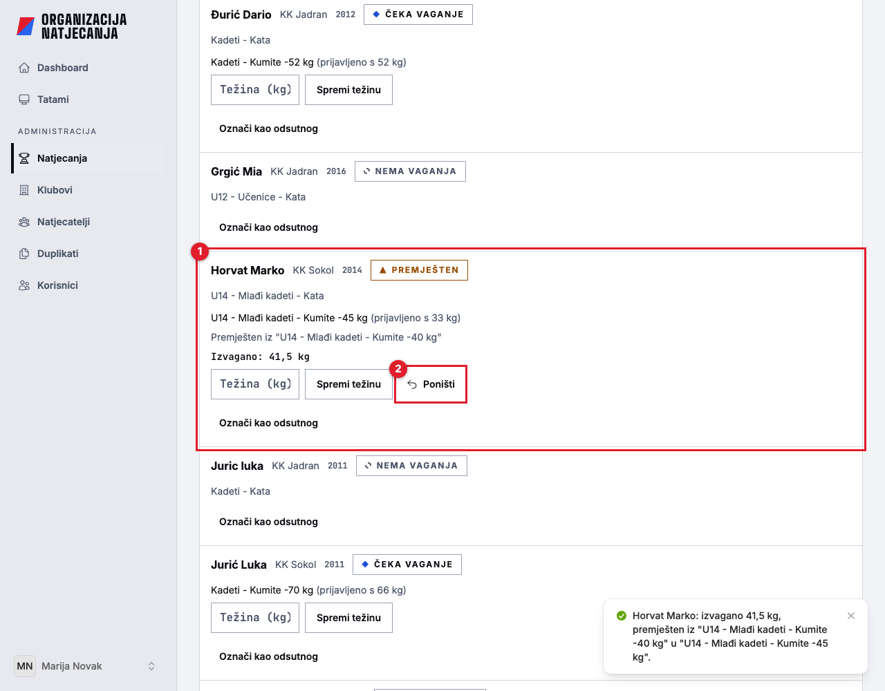
Kliknite Označi kao odsutnog i potvrdite. Odsutno dijete ostaje u bazi, ali se ne broji i ne ulazi u ždrijeb (to vrijedi za sve njegove prijave, i Kata i Kumite). Greškom označeno dijete vratite gumbom Označi kao prisutnog.
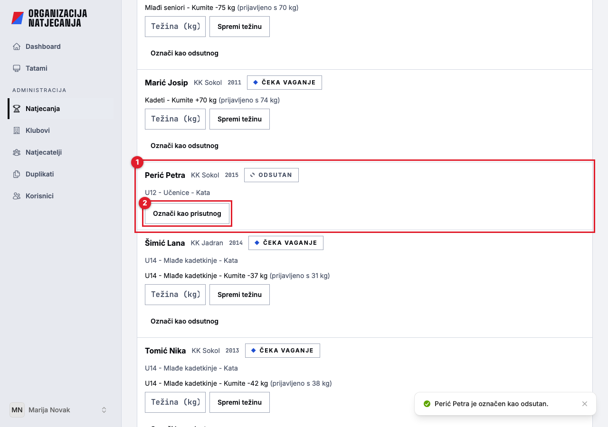
Kad kategorija ima ždrijeb, u njoj se više ne može ni vagati ni mijenjati prisutnost. Piše „Za ovu kategoriju već postoji ždrijeb”. Zato prvo vaganje i odsutni, pa onda ždrijeb. Ako ipak treba promjena, ždrijeb se može obrisati (dok nijedan meč nije odigran) pa napraviti ponovno.
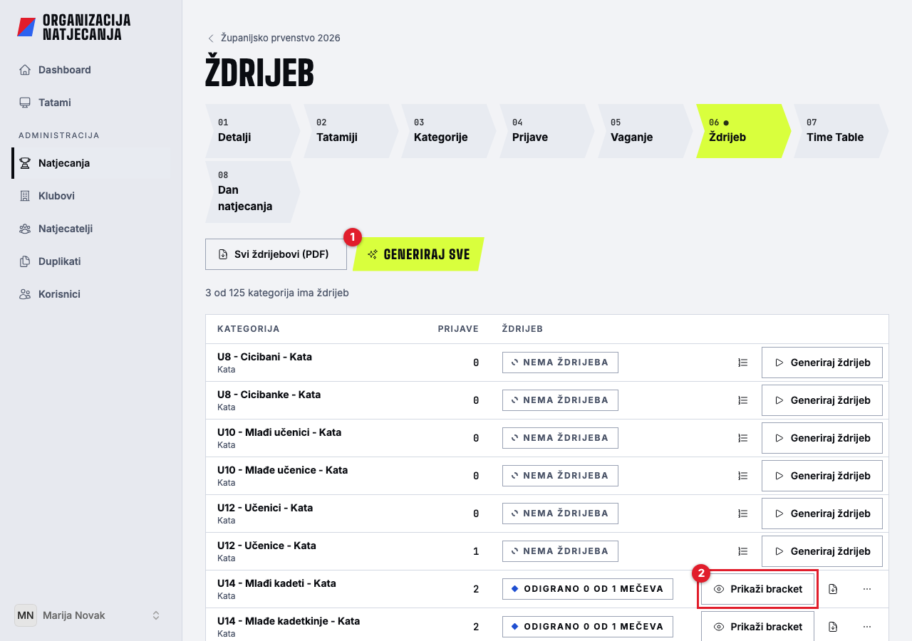
Uz kategoriju bez ždrijeba je ikona Nositelji: upisom brojeva 1, 2, 3… odredite najbolje djece koja dobivaju najpovoljnije pozicije. Ždrijeb se može Ponovno generiraj ždrijeb ili Obriši ždrijeb samo dok nijedan meč nije odigran. Aplikacija pazi da djeca iz istog kluba po mogućnosti ne budu u istom paru prvog kola.
Time table raspoređuje kategorije po tatamijima i računa procijenjena vremena.
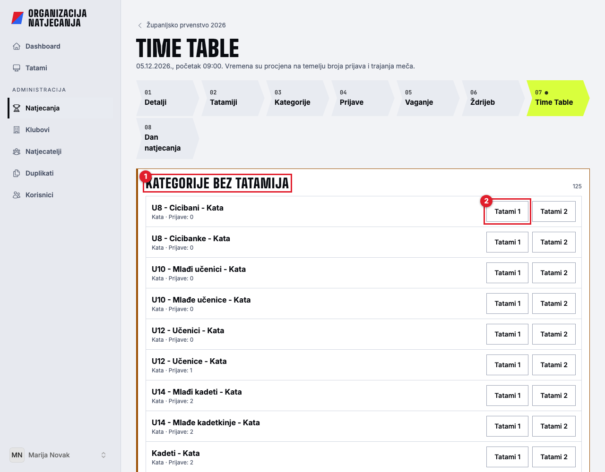
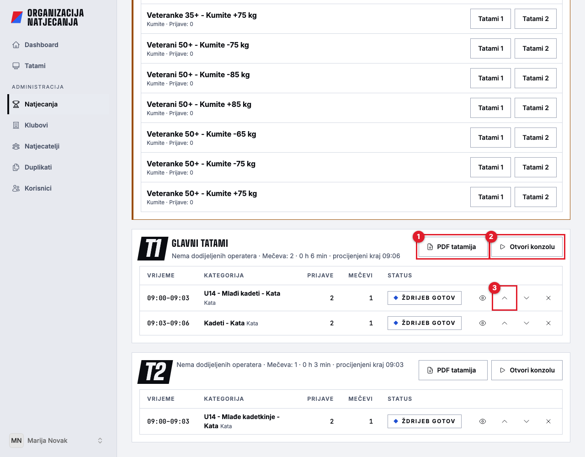
Vremena su procjene (na temelju broja borbi i trajanja meča) i ne pomiču se sama ako se kasni.
| Problem | Rješenje |
|---|---|
| Gumb Uvezi je siv. | U pregledu postoji redak s oznakom Problem. Ispravite ga (preuzmite Preuzmi retke s problemom) ili kliknite Uvezi samo ispravne retke. |
| Dijete je u krivoj kategoriji. | Najčešće je kriv datum rođenja, spol ili težina u klupskoj datoteci. Ispravite podatke i ponovno uvezite: aplikacija će prijavu premjestiti (piše „zamjenjuje prijavu u kategoriji…”). Za Katu B ili posebne slučajeve koristite Nova prijava. |
| Ne mogu mijenjati ni brisati prijave. | Kategorija ima ždrijeb. Prvo Obriši ždrijeb (moguće samo dok nijedan meč nije odigran). |
| Isto dijete se pojavljuje dvaput. | Stranica Duplikati (poglavlje 8). |
| Klub se pojavljuje dvaput s malo drukčijim imenom. | Ujednačite naziv na stranici Klubovi, pa spojite na stranici Duplikati. |
| Klub je maknuo dijete s popisa, a ono je još prijavljeno. | Uvoz nikad ne briše. Obrišite prijavu ručno (poglavlje 7). |
| Odsutno dijete je ušlo u ždrijeb. | Odsutne treba označiti prije ždrijeba (poglavlje 9). Obrišite ždrijeb kategorije, označite dijete i generirajte ponovno. |
| Natjecanje se ne vidi javnosti. | Status je Nacrt. Promijenite ga (poglavlje 3). |
| Kategorija ne postoji za dijete. | Provjerite je li odabran pravi skup kategorija i je li datum natjecanja ispravan: dobne skupine računaju se po godini datuma natjecanja. |
| Brisanje kategorije ili natjecanja. | Briše i sve prijave i rezultate. Koristite samo kad ste sigurni. |
| Stupac | Dopušteni zapisi | Obavezno? |
|---|---|---|
| Ime | Tekst | Da |
| Prezime | Tekst | Da |
| Spol | M, Ž (prihvaća se i Z, Muški, Ženski) | Da |
| Datum rođenja | 14.03.2015. ili 14.3.2015. ili 2015-03-14 | Da |
| Težina | Broj, do dvije decimale, zarez ili točka (33,5) | Samo za Kumite |
| Kata | DA ili prazno (prihvaća se i D, X, 1; za „ne”: NE, N, 0) | Barem jedno od Kata/Kumite |
| Kumite | DA ili prazno | Barem jedno od Kata/Kumite |
| Prošla težina (info) | Samo u predlošku za klub: podsjetnik s prošle prijave | Ne, ne uvozi se |
Datoteka smije biti Excel (.xlsx) ili .csv, do 5 MB i 1000 redaka. List se mora zvati Prijave, a nazivi stupaca ostaju kakvi jesu (velika slova i kvačice nisu bitni).
| Poruka | Značenje |
|---|---|
| Nedostaju obavezni stupci: … | U datoteci nedostaje neki stupac. Koristite predložak. |
| Datoteka je prazna. | Nema nijednog retka s podacima. |
| Datoteku nije moguće pročitati. Je li ispravna XLSX ili CSV datoteka? | Datoteka je oštećena ili je druge vrste. |
| Datoteka ima više od 1000 redaka. Podijelite je na manje datoteke. | Podijelite popis na dva dijela. |
| Polje Ime/Prezime je prazno. | U retku nema imena ili prezimena. |
| Spol „…” razlikuje se od spola već zabilježenog za ovog natjecatelja. | Isto ime i datum rođenja već postoje s drugim spolom. Provjerite je li to isto dijete. |
| Natjecanje nije u fazi prijava. | Upozorenje: status nije Prijave. Uvoz svejedno radi. |
| Rok za prijave istekao je … | Upozorenje: rok je prošao. Uvoz svejedno radi. |
| Datoteka je pripremljena za … / za drugo natjecanje. | Upozorenje: predložak je napravljen za drugi klub ili natjecanje. Provjerite jeste li odabrali pravi klub. |
| Već prijavljen u kategoriji „…” koja ima ždrijeb, pa se ta prijava ne može mijenjati. | Dijete ima prijavu u kategoriji s ždrijebom. Mijenjanje nije moguće dok se ždrijeb ne obriše. |
| Oba su prijavljena u kategorijama koje već imaju ždrijeb, pa se ne mogu spojiti. | Poruka na stranici Duplikati. |